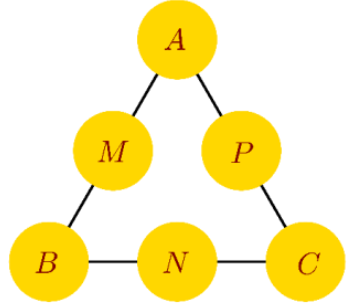

Câu 17. Bạn Nam tham gia cuộc thi giải một mật thư. Theo quy tắc của cuộc thi, người chơi cần chọn ra sáu số từ tập hợp $S=\{11;12;13;14;15;16;17;18;19\}$ và xếp mỗi số vào đúng một vị trí trong sáu vị trí $A,B,C,M,N,P$. Mật thư sẽ được giải nếu các bộ ba số xuất hiện ở những bộ ba vị trí $(A,M,B); (B,N,C); (C,P,A)$ tạo thành các cấp số cộng theo thứ tự đó. Bạn Nam chọn ngẫu nhiên sáu số trong tập $S$ và xếp ngẫu nhiên vào các vị trí yêu cầu. Gọi xác suất để bạn Nam giải được mật thư ở lần chọn và xếp đó là $a$. Giá trị của $\frac{1}{a}$ bằng bao nhiêu?
